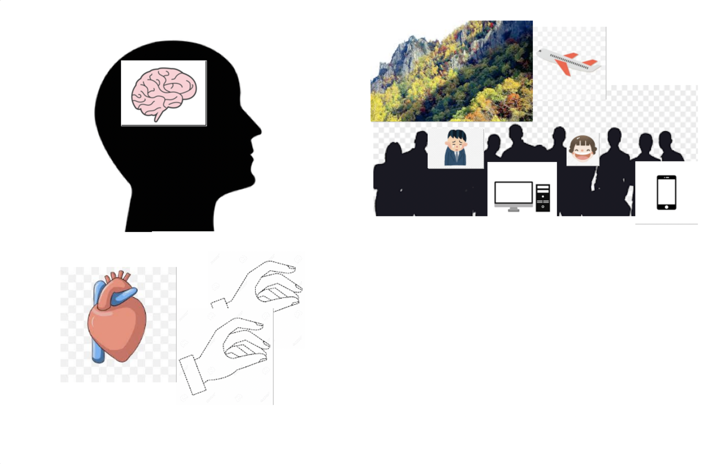
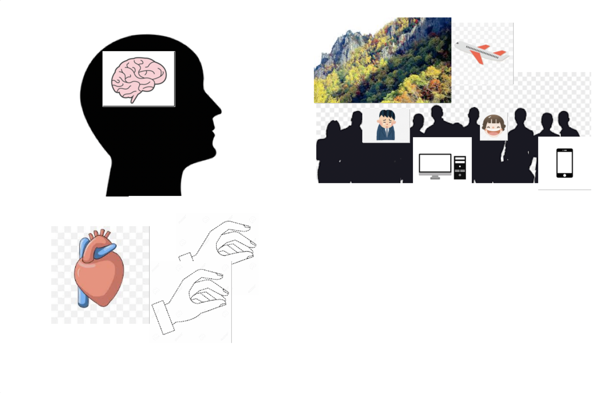

- BIATOSS et ensiegnant - Catalogue de services - GED - Etudiant - Catalogue de services - [https://e-p8.univ-paris8.fr](https://e-p8.univ-paris8.fr)Rajouter les icônes pour permettre d'alléger la page d'accueil

 
